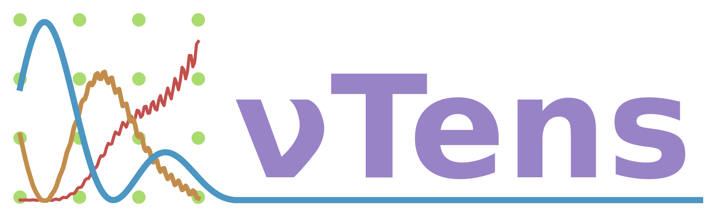

A lightweight library for calculating neutrino oscillation probabilities using tensors typically used in machine learning.



Feature Wishlist
- [x] Support PyTorch in tensor library
- [x] Vacuum oscillation calculations
- [x] Constant matter density propagation
- [x] Basic test suite
- [x] Basic CI
- [x] Doxygen documentation with automatic deployment
- [ ] Add test coverage checks into CI
- [ ] Integrate linting ( cpp-linter? )
- [ ] Add instrumentation library for benchmarking and profiling
- [ ] Add suite of benchmarking tests
- [ ] Integrate benchmarks into CI ( maybe use hyperfine and bencher for this? )
- [ ] Add proper unit tests
- [ ] Expand CI to include more platforms
- [ ] Add support for modules (see PyTorch doc)
- [ ] Propagation in variable matter density
- [ ] Add support for Tensorflow backend
- [ ] Add python interface